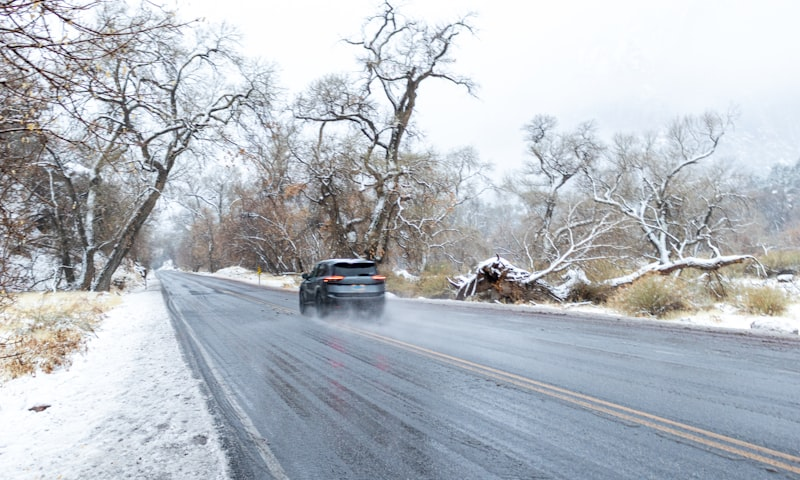
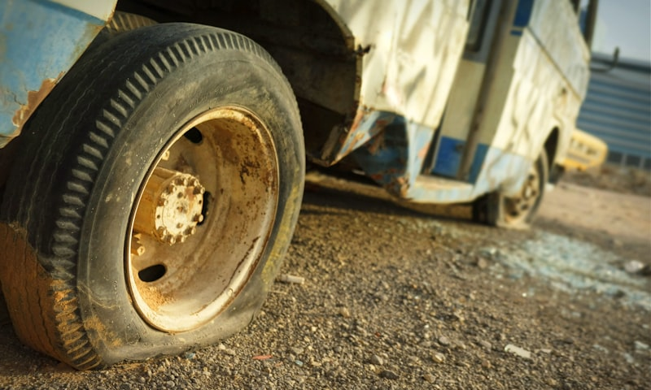
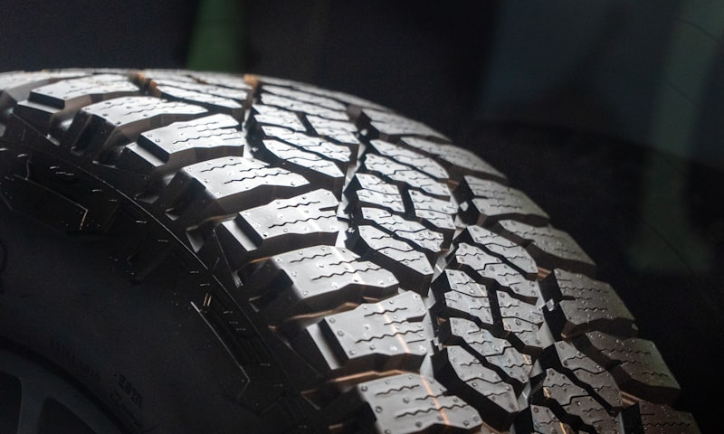

HOW TO KNOW WHEN YOUR TIRES NEED REPLACING
Worn tires are one of the biggest safety risks on the road. Here are the warning signs every driver should know — and what to do before it's too late.
READ ARTICLEExpert tire and auto repair advice for NJ drivers. Learn when to replace tires, how to save money, and keep your vehicle road-safe.

Worn tires are one of the biggest safety risks on the road. Here are the warning signs every driver should know — and what to do before it's too late.
READ ARTICLE


